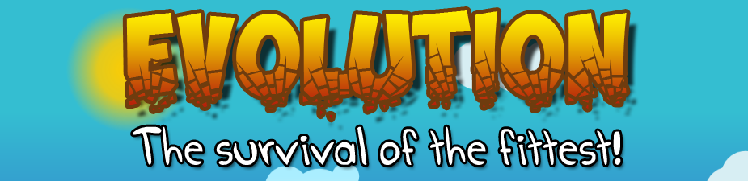

LD#24: Evolution Postmortem
Aug 27, 2012 · 3 minute read · CommentsGames development

Play the game!
Ludum Dare #24 is over after an exhausting crazy weekend but, above all, it´s been a ton of fun. Joining the Dare has proven to be an excellent idea and I believe it"d be right to say it’s has not gone too bad after all, considering it was my first time. Here’s a little postmortem on the experience.
Evolution – The survival of the fittest
The competition’s theme was Evolution so I went for a classic 2D platformer starred by a funny caveman who has to get through the level while killing dinosaurs by jumping on them or throwing rocks which he collects himself. Yes, I"m aware I"m not going to get many points for sticking to the theme.
Evolution is written in Java using the wonderful libgdx framework and my personal code base (which I made available prior to the Dare).

What went right
- Completion: I guess having delivered something at my first attempt it’s a win, even though the game lacks in many aspects. Time management was not completely disastrous.
- Graphics: Evolution has received very positive feedback art wise and being a programmer it feels a bit bizarre. The process followed to create and animate character was: sketching on paper, vectorizing and colouring with Inkscape, animation with Flash and Texture Packer to produce spritesheets. I"ll keep working on this line.
- Multi platform: libgdx was a good decision, not only is a very nice and powerful framework but also allows to target several platforms with no to very little effort.
- Box2D: using this popular physics engine empowered me to implement the basic movement through the level extremely quickly.
- Code base: although I discovered a fair amount of bugs in my code base, it behaved quite nicely. I also got a ton of ideas to improve it.

What went wrong
- Gameplay polish: I didn’t invest enough time to polish the gameplay, tweak values and play test the game and that reflects on the final build. It’s a noob mistake and that makes me sad.
- Content: I decided to invest the last moments of the competition in the little polishing I did instead of content creation which resulted in having just one level. However, I think it was the right call, I simply didn’t have time for everything.
- Asset pipeline: too much time was wasted in getting the export process right for some of the assets. On the bright side, I’ve learnt a lot and it won’t happen next time.
- HTML5 port: it would have been awesome to have a browser version of my game with no third party plugins requirements so people could just play. Too bad my HTML5 port had a bad crash.

Conclusions
I can’t stress enough how awesome of an experience it was. So many emotions mixed in the pot: stress, joy, thrill, exhaustion and so many more. I learned so much and felt great for having been able to deliver something in such a short timespan. I will definitely try to be in next time.
Looking forward to get more feedback during the voting phase, best of luck to all my fellow Ludum Darers!